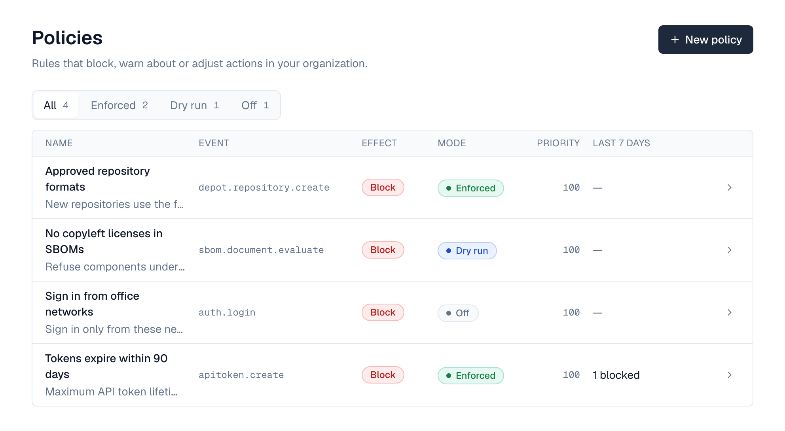
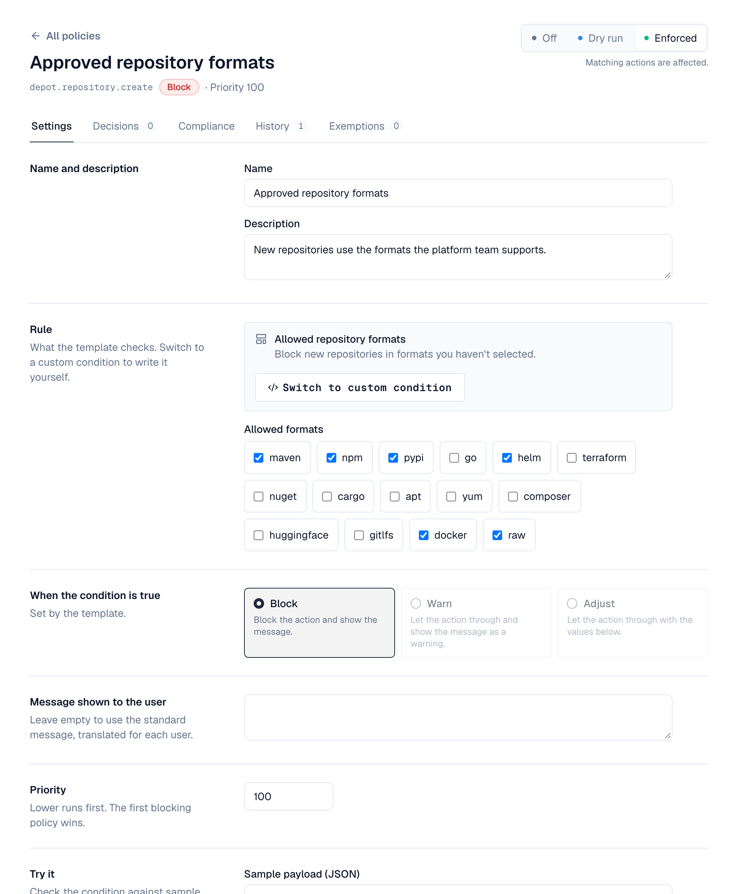

Policies let administrators control how Depotex behaves in their organization. A policy watches one kind of action (an event, such as a repository being created), checks a condition, and then blocks the action, lets it through with a warning, or adjusts one of its values.
License: Pro or higher. Permissions: policies:read to view, policies:write to create and change, policies:admin to exempt users or roles. Organization admins can view and write policies; exemptions need a super admin.
1. Managing policies
Go to Settings → Policies. The list shows each policy's event, effect, mode and priority, and what it did in the last 7 days (for example "3 blocked" or "4 would warn"); filter it by mode with All, Enforced, Dry run and Off. Open a policy to edit it, see its decisions, restore an earlier version, or manage exemptions.

- New policy: templates are grouped by area (Sign-in, API tokens, Profiles, Repositories); pick one and fill in its form, or choose Custom condition under Your own to write your own: choose the event, write the condition (the fields you can use are listed under the event), choose what happens, and write the message people see. Start in sets the first mode; dry run is recommended.
- Mode: switch an existing policy between Off, Dry run and Enforced at the top of its page. Enforcing asks first and says how many actions it would have affected in the last 7 days.
- Try it: in the policy's settings, run the condition against sample data to see whether it would match, without saving. Changes wait in a bar at the bottom until you save or discard them.
- Decisions: what the policy blocked, warned about, adjusted, or would have in dry run.
- History: every saved version with what it changed (for example "Added 192.168.12.0/24 to Allowed IP ranges"), who saved it and when; Restore saves an older one as the newest version.
- Exemptions: users or roles the policy skips (super admins only).
When a warn policy matches, people see its message as a notice in the corner of the screen; when a block policy matches, they see its message instead of the action happening.
2. Templates
Templates cover common rules without writing a condition. Pick one under New policy, fill in its form, and Depotex builds the condition for you. The message people see is a standard one, translated into each person's language; write your own message to replace it.

| Template | What it does | You set |
|---|---|---|
| Sign in only from these networks | Blocks sign-ins from IP addresses outside your ranges | IP ranges, such as 10.0.0.0/8 or 2001:db8::/32 |
| Sign in only with these roles | Blocks sign-ins by users whose role isn't listed | Roles |
| Turn off “Remember me” | Sessions end when the browser closes | Nothing |
| Maximum API token lifetime | Blocks API tokens that never expire or last too long | Days (1 to 3650) |
| API tokens need an IP allowlist | Blocks API tokens created without an IP allowlist | Nothing |
| Keep permissions out of API tokens | Blocks API tokens that include listed permissions | Permissions, such as users:delete |
| Preset avatars only | Blocks uploaded profile pictures | Nothing |
| Allowed repository formats (sample app) | Blocks new repositories in other formats | Formats |
A policy made from a template opens in the same form when you edit it. Switch to custom condition turns it into a custom policy, starting from the condition the template built.
Sign-in templates run on every sign-in, and each sign-in is checked against every range or role you list (up to 100). That stays well under a millisecond, but a dry-run sign-in template writes a decision for every sign-in it would block, which on a busy system adds up; review it and switch it to enforce or off.
3. What a policy can do
| Effect | What happens when the condition is true |
|---|---|
| Block (deny) | The action doesn't happen. The user sees the policy's message. |
| Warn (warn) | The action happens, and the user sees the policy's message as a warning. |
| Adjust (set) | The action happens with the values you set, for the fields the event allows (for example a repository's description). |
Policies only restrict: they never let anyone do something their role doesn't already allow.
4. Modes
| Mode | Meaning |
|---|---|
| dry_run | Records what the policy would have done, without doing it. New policies start here. |
| enforce | The policy takes effect. |
| off | The policy is ignored. |
Start every policy in dry run, check its decisions for a few days, then switch it to enforce.
5. Conditions
Conditions are short expressions in CEL (Common Expression Language). They can use:
| Name | Contains |
|---|---|
| payload | The action's details, e.g. payload.format for a new repository. Passwords and secrets are never included. |
| actor | Who is acting: actor.id (e.g. user:42), actor.roles, actor.org |
| now | The current time |
!(payload.format in ["raw", "npm"]) // anything other than raw or npm
!payload.name.startsWith("team-") // names must start with team-
!("org_admin" in actor.roles) && payload.format == "docker"Sign-on policies use auth.login, checked after the password is verified and before the session starts:
!payload.ip.startsWith("10.20.") // only from the office network
payload.remember_me // with effect "set" {"remember_me": false}: no long sessions
payload.expires_at == null // on apitoken.create: tokens must expireA sign-on policy only refuses a sign-in after the password was correct, so its message tells the person their password worked. Keep sign-on messages general if that matters to you.
A condition must be true or false, may only use the fields the event provides (checked when you save), and has a size limit so it always runs quickly. GET /api/policies/events lists the events that accept policies and their fields.
6. Order and conflicts
- Policies run in order of priority (lower first).
- The first enforced block stops the action; warnings from all matching policies are shown.
- If two policies adjust the same field, the one with the lower priority wins.
- If a policy's condition fails to run, the action goes ahead, except on security-sensitive actions, where it is blocked.
7. Events that accept policies
auth.login, apitoken.create, apitoken.update, apitoken.rotate, apitoken.org_policy.update, avatar.update, alert.create and, in the sample app, depot.repository.create. See the Events reference.
8. Exemptions
Exempt a user (user:42) or a role (role:org_admin) from a policy, with a reason and an optional expiry date. Exemptions are logged, like every policy change.
9. Compliance: checking what already exists
A policy only checks actions when they happen, so things created before it existed never meet it — for example API tokens created before a 90-day limit. The policy's Compliance tab lists existing items that the policy would block or warn about if they were created today.
- Depotex checks every block and warn policy that is on each night; Check now runs it immediately (needs policies:write).
- It only reports. Nothing is changed, revoked or deleted: decide what to do with each item yourself.
- Each item is checked with its owner as the actor, and exemptions apply.
- Available for API tokens and repositories. Sign-in policies can't be checked this way (there's nothing lasting to check).
- A check reads at most POLICY_SCAN_MAX_ITEMS items (10,000 by default) and is marked as incomplete beyond that.
10. Decisions and history
- Every time a policy blocks, warns, adjusts, would have done so in dry run, is skipped by an exemption or fails, a decision is recorded (kept 30 days, POLICY_DECISION_RETENTION_DAYS).
- Every change creates a new version; you can roll back to any earlier version.
11. Performance
- An action with no policies for your organization isn't slowed down.
- Each policy on an event is checked while the user waits, in well under a millisecond for typical conditions; the total is capped by POLICY_EVAL_BUDGET (50 ms by default).
- Every time a policy matches, a decision is written to the database. A policy that matches almost everything on a busy event — for example a dry-run policy with condition true on auth.login — writes a decision for every sign-in. Keep conditions specific and don't leave broad dry runs running.
- Changes to policies take effect immediately on all servers with Redis, and within POLICY_CACHE_TTL (10 s) without it.
Very complex conditions (large lists, nested loops) take longer and can hit the size limit (POLICY_COST_LIMIT), in which case they count as a failed check. Prefer several simple policies to one complex one.
12. API
| Method | Endpoint | Permission | Description |
|---|---|---|---|
| GET | /api/policies/events | policies:read | Events that accept policies, with their fields |
| GET | /api/policies/templates | policies:read | Templates and their parameters |
| GET / POST | /api/policies | read / write | List / create |
| GET / PUT / DELETE | /api/policies/{id} | read / write / write | View / change (send the version you edited) / delete |
| GET | /api/policies/{id}/versions | read | History, with changedBy and changedByName |
| POST | /api/policies/{id}/rollback | write | {"version": 2} |
| GET / POST | /api/policies/{id}/exemptions | read / policies:admin | List / add {subject, reason, expiresAt} |
| DELETE | /api/policies/{id}/exemptions/{exemptionId} | policies:admin | Remove an exemption |
| POST | /api/policies/test | write | Try a draft policy on sample data without saving it |
| GET | /api/policies/impact | read | Decisions of the last 7 days per policy, counted by outcome: {data: [{policyId, counts: {deny: 3, would_warn: 4}}], since, days} |
| GET | /api/policies/decisions?policyId= | read | Decisions, newest first (paginated) |
| GET | /api/policies/{id}/compliance | read | Latest compliance check and the items it found (paginated) |
| POST | /api/policies/{id}/compliance/scan | write | Check existing items now |
curl -X POST /api/policies -H "Content-Type: application/json" -d '{
"name": "Only raw and npm repositories",
"event": "depot.repository.create",
"mode": "dry_run",
"condition": "!(payload.format in [\"raw\", \"npm\"])",
"effect": "deny",
"messageText": "Only raw and npm repositories are allowed."
}'From a template: send template and templateParams instead of event, condition and effect. Parameter errors come back as fields named templateParams.<name>.
curl -X POST /api/policies -H "Content-Type: application/json" -d '{
"name": "Tokens expire within 90 days",
"template": "token_max_lifetime",
"templateParams": {"days": 90}
}'A blocked action returns 403 with "reason": "policy_denied". Warnings come back in the Depotex-Policy-Warnings response header (base64url-encoded JSON).
13. Settings
| Variable | Default | Description |
|---|---|---|
| POLICY_CACHE_TTL | 10s | How quickly a server picks up policy changes when Redis isn't available |
| POLICY_EVAL_BUDGET | 50ms | Time limit for checking an action's policies |
| POLICY_COST_LIMIT | 10000 | Maximum size of a condition's work |
| POLICY_DECISION_RETENTION_DAYS | 30 | How long decisions are kept |
| POLICY_SCAN_SCHEDULE | 30 3 * * * | When the nightly compliance check runs (UTC) |
| POLICY_SCAN_MAX_ITEMS | 10000 | Most items one compliance check reads |